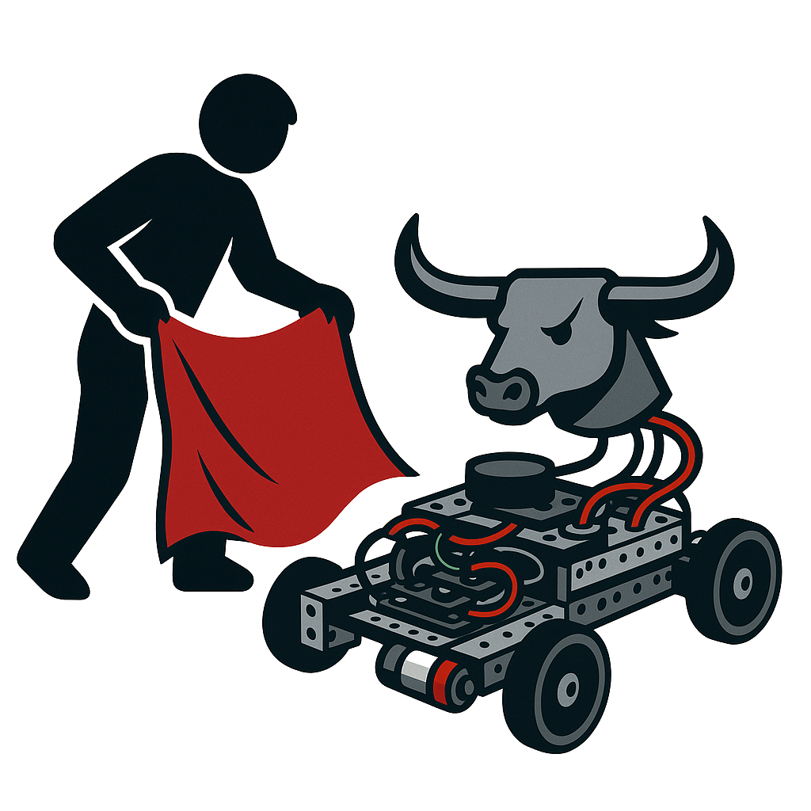

Autonomous Mobile Robot for Human Detection and Red Object Tracking (aka “The Bull”)
An autonomous mobile robot that detects humans, recognizes red objects, and follows a target in real time using stereo vision and onboard AI.

Role / Tools / Timeline
- Role: Robotics lead focusing on perception and controls
- Tools: Python, ROS2, OpenCV, stereo camera hardware
- Timeline: Semester-long build and test
- Team: Collaborative build with classmates
What I Built
- Integrated stereo vision pipeline to detect people and isolate red targets in real time
- Implemented tracking and pursuit logic that translated detections into smooth motion commands
- Deployed perception and control nodes on the robot with ROS2 messaging
- Tuned navigation behavior for stable following and obstacle avoidance
Results
- Robot reliably followed red targets and responded to human presence during live demos
- Validated stereo pipeline and control loop in field runs